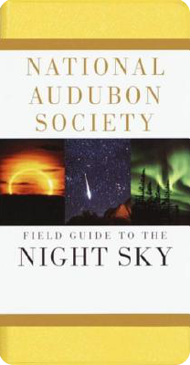

Woodside Astronomy
Instructor: Steve Sisney
Meetings: Fall 2012: Mon 1:45p, Wed 1:45p, Fri 1p
Description: Introduction to Astronomy and observing.

Textbook:
Audubon Society Field Guide to the Night Sky (ISBN: 0679408525
$12.95) Night Sky provides a concise guided tour of the heavens with
48 monthly sky charts of the northern sky and 88 constellation
charts, each offering a detailed map of individual
constellations. Essays on the universe, the solar system, and
constellations introduce the reader to the wonders of the sky.
Course Outline
- Some Astronomy History
- The Universe
- Stars, Galaxies, and Black Holes
- The Solar System
- The Seasons and Planetary Phenomena
- Telescopes and Observing tips
- We Are Not Alone
Lessons
Lesson 1 Wed 17 Oct 2012
Discuss Some astronomy history from in-class notes (attached: astronomy-01.pdf).
Homework 1
Further reading:
- The Antikythera Mechanism (remarkable computer), ca. 80 BCE, Greek
- Watch VIDEO: The Antikythera Mechanism (8 minutes)
- PlanetQuest Historic Timeline
Lesson 2 Fri 19 Oct 2012
- Finish up some astronomy history.
- In-class notes (attached: astronomy-01.pdf).
- Review features of our text.
Homework 2 Due Mon 22 Oct 2012:
- Name as many astronomical objects (planets, stars, etc.) as you can.
- Describe what something astronomical (e.g. the night sky, the sun
or moon, etc.) means to you in about 100 words – or, you can write a
poem, draw something, create music, or anything else you want.
- Read pp 13-21 of your text.
Lesson 3 Mon 22 Oct 2012
- Briefly discuss homework and previously unanswered questions.
- Watch SkyWeek
for 22-28 Oct 2012 (5 minutes)
- We'll discuss The Universe from in-class notes
(attached astronomy-02.pdf) and our text.
- Further reading:
VIDEO: The
known universe (6min 30sec)
Homework 3 Due: Wed 24 Oct 2012
- Was the universe created in an alien laboratory?
- Describe as precisely as you can, exactly where you are in the
Universe — you can use galactic, celestial, and geodetic coordinates
too.
- Briefly describe features of this week's night sky.
Lesson 4 Wed 24 Oct 2012
Continue discussion of The Universe
(attached astronomy-02.pdf)
Homework 4 Due: Mon 29 Oct 2012
- If you could send a message to the other end of the universe, what
would it be?
- Briefly describe the composition, size, age, and origin of the
universe.
- What is the Big Bang?
Lesson 5 Mon 29 Oct 2012
- Watch SkyWeek
video for Oct 29-Nov 4.
- Discuss Stars, Galaxies, and Black Holes from our text
pp14-22.
Homework 5 Due: Wed 31 Oct 2012
- Harness the power the nearest star to construct a cosmic death
ray.
- What is a quasar, and what is the likely source of its
power?
- Name five galaxy types, and give examples.
Lesson 6 Wed 31 Oct 2012
Continue discussing Stars, Galaxies, and Black Holes from our
text pp14-22.
No homework: Happy Halloween!
Lesson 7 Fri 2 Nov 2012
Continue discussing Stars, Galaxies, and Black Holes from our
text pp14-22.
Stellar evolution and black holes.
No homework
Lesson 8 Mon 5 Nov 2012
Continue discussing black holes
- Watch SkyWeek
video for Nov 5-11.
- Black holes handout (attached astronomy-03.pdf)
- VIDEO: The
largest black hole in the universe
Homework 8
- What is a black hole? How do we know they exist?
- Could a Black Hole be used for intergalactic or time travel?
How?
- Name three candidate black holes. Can you find them in the Night
Sky?
- Describe this week's Night Sky.
Lesson 9 Wed 7 Nov 2012
Discuss Multiple star systems and Variable
stars.
Homework 9
Read pages 29-36 of our text.
Lesson 10 Fri 9 Nov 2012
Continue discussing pages 29-36, Clusters
and Nebulae.
Homework 10
- Name two variable stars currently visible in the Night Sky.
- What's the difference between physical and optical
multiple stars?
- What's the difference between open and globular star
clusters?
- Read pages 37-45 of our text; The Solar System
Lesson 11 Wed 14 Nov 2012
- Watch SkyWeek
video for Nov 12-18.
- Begin Solar System discussion.
Homework 11 Due Friday, 16 Nov
2012
- Make a table of planets and their basic properties. (distance in
AU, diameter, mass, gravity, day, year)
- What's the difference between a Planet and a Dwarf Planet?
- Roughly how many moons are there in the Solar System?
Lesson 12 Fri 16 Nov 2012
- Discuss Physical Properties of the Solar System,
and Kepler's Laws of Planetary Motion
- Discuss Mid-Term Final Project
Homework 12 Due Mon 19 Nov 2012
Read pages 43-51 in our text: Planetary
phenomenon and the Seasons
Lesson 13 Mon 19 Nov 2012
- Watch SkyWeek
video for Nov 19-25.
- Finish discussion of The Solar System: Planets
- Discuss The Seasons (astronomy-07-seasons.pdf)
Homework 13 DUE Wed 28 Nov 2012
Choose a topic for your final project from
(astronomy-final.pdf)
Lesson 14 Wed 28 Nov 2012
- Watch SkyWeek
video for Nov 26
- Discuss The Seasons (astronomy-07-seasons.pdf)
Lesson 15 Fri 30 Nov 2012
- Discuss Planetary Phenomena (astronomy-07-seasons.pdf)
and Solar System Configuration
(astronomy-08-configuration.pdf)
Homework 15 DUE Mon 3 Dec 2012
- What is the cause of the seasons and what is seasonal lag?
- Which planetary phenomenon is the best time to view a
planet?
- Describe this week's Night Sky.
Lesson 16 Mon 3 Dec 2012
- Watch SkyWeek
video for Dec 3rd.
- Discuss Coordinate Systems
(astronomy-09-coordinates.pdf)
Homework 16 DUE Wed 5 Dec 2012
- What is the simplest way (coordinate system) to point out an
object in the sky?
- What are two types of telescope mounts?
- What is the best type of telescope mount for tracking
objects in the sky?
- Describe this week's Night Sky.
Lesson 17 Wed 5 Dec 2012
- Check progress on final projects
- Continue discussion of Telescopes (see
attached: astronomy-10-telescopes.pdf
and astronomy-11-schematic.pdf) and pages 81-88 of our
text.
Homework 17 DUE Fri 7 Dec 2012
- Complete any un-finished homework.
- Work on final projects
Lesson 18 Fri 7 Dec 2012
- Telescope demonstration
- Discuss observatories
Homework 18
Work on final project!
Lesson 19 Mon 10 Dec 2012
- Watch SkyWeek
video for Dec 3rd.
- Discuss Aliens! (astronomy-11-aliens.pdf)
Homework 19 DUE Wed 12 Dec 2012
- Listen to 1938 Orsen Welles War of the Worlds
broadcast
- Final Project Report (2 pages)
Lesson 20 Wed 12 Dec 2012
- Continue discussion of Aliens!
(astronomy-11-aliens.pdf)
- VIDEO: Calculating
the Probability of Contacting Alien Intelligences
Homework 20
Work on final presentations
Attachments
Documents
Images
Online Resources
- Astronomy news
- Astronomy Software
- Internet Astronomy
- Local Astronomy
- Missions & Projects
Further Reading
General Observing
Selected Topics
Selected Video
Recommended Books
- A Brief History of Time (1998) Stephen Hawking
- Big History: From the Big Bang to the Present (2007) Cynthia Stokes Brown
- Cosmos (1985) Carl Sagan
- Entering Space (2000) Robert Zubrin
- The Hitchhiker's Guide to the Galaxy (1979-2009) Douglas Adams
- Longitude (2007) Dava Sobel
- Moon Shot (2011) Al Shepard and Deke Slayton
Black Holes (a popular topic!)
Our Current Sky
Sky Map
Facing south at Woodside (37°N 122°W)

Clear Sky Chart

Observation Resources
- Skymaps are free each month for you to explore, learn & enjoy the night sky.
- StarDate tells listeners what to look for in the night sky, and explains the science, history, and skylore behind these objects.
- In the Sky gives a brief overview of what's in the sky this week, StarDate
- Sky Report tells what’s happening in the skies of southern California, Griffith Observatory.
- Space Weather, detailed info on solar activity from NOAA
- Astronomy from the Old Farmer's Almanac
Cal Academy Morrison Planetarium
Sky & Telescope
U.S. Naval Observatory
About
This site can be maintained by anyone on GitHub. Ask your instructor how.
{kind=link}
{kind=link}
{kind=link}
{kind=link}